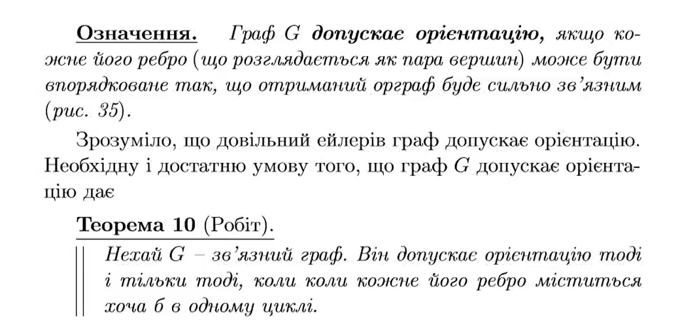

Теорія графів
Теорія графів — розділ математики, що вивчає властивості графів. Наочно
граф можна уявити як геометричну конфігурацію, яка складається з точок
(вершини) сполучених лініями (ребрами).
Вступний відео-урок по графам
Види графів
- обмежений граф
- орієнтований граф
- простий граф
-
повний граф

Зв'язний граф називається ейлеровим графом, якщо існує замкнений ланцюг,
який проходить через кожне ребро. Такий ланцюг називатимемо ейлеровим
ланцюгом, або ейлеровим циклом. Граф називається напівейлеровим, якщо
існує ланцюг, який проходить через кожне його ребро рівно один раз. Лісом
називається граф, який не містить циклів. Зв'язний ліс називається
деревом. Плоским графом називається граф, у діаграмі якого лінії, що
відповідають ребрам, перетинаються лише в точках, які відповідають
вершинам графа. Планарним графом називається граф G, ізоморфний деякому
плоскому графу. Останній називається плоскою картою графа G. Внутрішньою
гранню плоского зв'язного графа називається скінченна область площини, що
обмежена замкненим маршрутом графа і не містить усередині ні вершин, ні
ребер графа. Частина площини, яка складається з точок, що не належать
жодній внутрішній грані, називається зовнішньою гранню. Множина всіх
граней плоского зв'язного графа позначається P. Замкнений маршрут, що
обмежує грань, називається межею грані, а довжина цього маршруту —
степенем грані. Степінь грані позначається Pr. Максимальним планарним
графом називається планарний граф, який при додаванні до нього будь-якого
ребра перестає бути планарним. Плоский зв'язний граф, кожна грань якого
(включаючи й зовнішню) обмежена трикутником, називається триангуляцією.
Застосування теорії графів
В хімії (для опису структур, шляхів складних реакцій, правило фаз також
може бути інтерпретоване як задача теорії графів); комп'ютерна хімія —
порівняно молода галузь хімії, заснована на застосуванні теорії графів.
Теорія графів являє собою математичну основу хемоінформатика. Теорія
графів дозволяє точно визначити число теоретично можливих ізомерів у
вуглеводнів та інших органічних сполук.
В інформатиці та програмуванні (граф-схема алгоритму)
У комунікаційних і транспортних системах. Зокрема, для маршрутизації
даних в Інтернеті.
У схемотехніці (топологія з'єднання елементів на друкованій платі або
мікросхемі являє собою граф або гіперграф) .
В економіці та логістиці